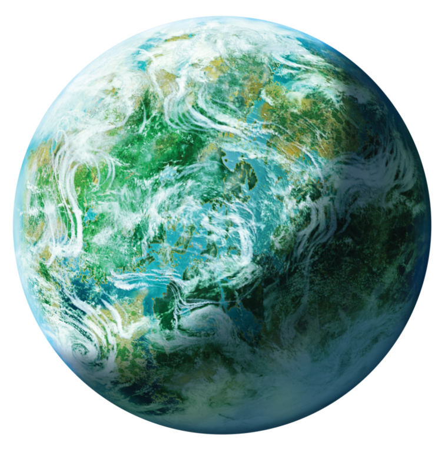

<!--this will have the background of a galaxy map and have one(multiple for stretch) planet(tatooine) visible
    the player will be able to select the planet and that will take you to the planet-level component-->


    <div class="bg-image" 
     style="background-image: url('../../../assets/galaxy.png');
            height: 100vh;
            background-color: black;
            background-repeat: no-repeat;
            background-size: 100%;">

            <div class="tatooine">
                
            </div>
            
            <div class="hoth">
                
            </div>
            <div class="endor">
                
            </div>

        </div>
        

